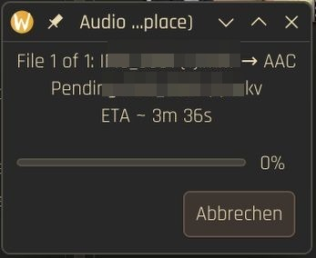

Why this exists
Wofür das gut ist
DaVinci Resolve on Linux does not support all codecs, and above all it has no AAC. These scripts work around that limitation: you convert the files with a right-click in Dolphin, without a terminal and without remembering FFmpeg options.
DaVinci Resolve unter Linux unterstützt nicht alle Codecs, und vor allem kein AAC. Diese Skripte umgehen diese Einschränkung: Du konvertierst die Dateien mit einem Rechtsklick in Dolphin, ohne Terminal und ohne dir FFmpeg-Optionen zu merken.
- Resolve on Linux does not decode every codec. AAC audio is the one that hurts most, because it is what cameras, phones, screen recorders and downloads use
- Without a way around it, clips show up in Resolve with no sound, or not at all
- Converting only the audio to FLAC or WAV is fast and lossless enough for editing, and the video can stay as it is
- If the video is a problem too, DNxHD and DNxHR are intra-frame editing codecs that Resolve handles well
- The AAC actions run the other way, for when you need a file with AAC audio again
- Resolve unter Linux dekodiert nicht jeden Codec. AAC-Audio ist der schmerzhafteste Fall, denn genau das nutzen Kameras, Handys, Bildschirmaufnahmen und Downloads
- Ohne Umweg erscheinen Clips in Resolve ohne Ton oder gar nicht
- Nur das Audio nach FLAC oder WAV zu konvertieren geht schnell und ist für den Schnitt verlustfrei genug, das Video kann bleiben, wie es ist
- Ist auch das Video ein Problem, sind DNxHD und DNxHR Intraframe-Schnittcodecs, mit denen Resolve gut zurechtkommt
- Die AAC-Aktionen laufen in die Gegenrichtung, für den Fall, dass du wieder eine Datei mit AAC-Audio brauchst
Any Audio Codec In
Beliebiger Audio-Codec
FLAC, WAV, and AAC conversions accept any input codec FFmpeg supports — MP3, AAC, Opus, Vorbis, PCM, and more.
FLAC-, WAV- und AAC-Konvertierungen akzeptieren jeden Eingangs-Codec, den FFmpeg unterstützt – MP3, AAC, Opus, Vorbis, PCM und mehr.
DNxHD & DNxHR
DNxHD & DNxHR
Smart resolution detection automatically selects DNxHD for ≤1080p and DNxHR SQ for 4K+ content, in professional .mov containers.
Die automatische Auflösungserkennung wählt DNxHD für ≤1080p und DNxHR SQ für 4K+, in professionellen .mov-Containern.
Batch Processing + ETA
Stapelverarbeitung + Restzeit
Select multiple files, convert them in one go. A single progress dialog shows pending files and an ETA based on actual media duration.
Mehrere Dateien auswählen und in einem Rutsch konvertieren. Ein einziger Fortschrittsdialog zeigt die offenen Dateien und eine Restzeit auf Basis der echten Mediendauer.
Safe Replace
Sicheres Ersetzen
Originals are backed up before replacement, output is validated with ffprobe before overwriting, and failed conversions never touch your files.
Originale werden vor dem Ersetzen gesichert, das Ergebnis wird vor dem Überschreiben mit ffprobe geprüft, und fehlgeschlagene Konvertierungen lassen deine Dateien unangetastet.
Native KDE Dialogs
Native KDE-Dialoge
Progress bars and confirmations use kdialog — feels native on KDE Plasma, no GTK/GNOME dependencies needed.
Fortschrittsbalken und Bestätigungen nutzen kdialog – fühlt sich unter KDE Plasma nativ an, ohne GTK-/GNOME-Abhängigkeiten.
Audio-Only Support
Reine Audiodateien
Works with pure audio files like .m4a, .mp3, .flac — outputs .flac, .wav, or .m4a directly without video container overhead.
Funktioniert mit reinen Audiodateien wie .m4a, .mp3 und .flac – gibt .flac, .wav oder .m4a direkt aus, ohne Video-Container.
Know what is running
Sieh, was gerade läuft
Conversions can take a while, especially DNxHR on 4K footage. A native KDE progress dialog keeps you informed, so you can leave the terminal out of it.
Konvertierungen können dauern, besonders DNxHR bei 4K-Material. Ein natives KDE-Fortschrittsfenster hält dich auf dem Laufenden, ganz ohne Terminal.
- One window for the whole selection: it does not reopen for every file
- The label shows the current file and the pending ones
- The ETA is weighted by media length, not by file count, so it stays rough but honest
- A desktop notification reports each finished or failed file
- Ein Fenster für die gesamte Auswahl: Es öffnet sich nicht für jede Datei neu
- Die Beschriftung zeigt die aktuelle Datei und die ausstehenden
- Die Restzeit wird nach Medienlänge gewichtet, nicht nach Dateianzahl, bleibt also grob, aber ehrlich
- Eine Desktop-Benachrichtigung meldet jede fertige oder fehlgeschlagene Datei

Conversions
Konvertierungen
Right-click any video or audio file in Dolphin to see these options under Davinci Resolve Conversions.
Rechtsklick auf eine Video- oder Audiodatei in Dolphin zeigt diese Optionen unter Davinci Resolve Conversions.
| ActionAktion | OutputAusgabe | FormatFormat | BehaviourVerhalten |
|---|---|---|---|
| Audio to FLAC (delete original)Audio zu FLAC (Original löschen) | Video → .mkv · Audio → .flac | FLAC | Replaces originalErsetzt das Original |
| Audio to FLAC (new file)Audio zu FLAC (neue Datei) | Video → .mkv · Audio → .flac | FLAC | Keeps originalBehält das Original |
| Audio to WAV (keep container)Audio zu WAV (Container behalten) | Video → same ext (PCM inside)Video → gleiche Endung (PCM darin) | WAV | Replaces originalErsetzt das Original |
| Audio to WAV (.wav)Audio zu WAV (.wav) | Audio-only → .wavNur Audio → .wav | WAV | Replaces originalErsetzt das Original |
| Audio to AAC (replace)Audio zu AAC (ersetzen) | Video → .mp4/.mov · Audio → .m4a | AAC | Replaces originalErsetzt das Original |
| Audio to AAC (new file)Audio zu AAC (neue Datei) | Video → .mp4/.mov · Audio → .m4a | AAC | Keeps originalBehält das Original |
| DNxHD/DNxHR (replace)DNxHD/DNxHR (ersetzen) | .mov (auto codec by resolution).mov (Codec automatisch nach Auflösung) | DNx | Replaces originalErsetzt das Original |
| DNxHD/DNxHR (.mov)DNxHD/DNxHR (.mov) | .mov (auto codec by resolution).mov (Codec automatisch nach Auflösung) | DNx | Keeps originalBehält das Original |
Installation
Installation
Dependencies:
Abhängigkeiten:
| DependencyAbhängigkeit | PurposeZweck |
|---|---|
ffmpeg | Media conversionMedienkonvertierung |
kdialog | Progress dialogsFortschrittsdialoge |
qdbus / qdbus6 | D-Bus updatesD-Bus-Aktualisierungen |
notify-send | NotificationsBenachrichtigungen |
bc | Math calculationsBerechnungen |
Changes
Änderungen
-
1.2.1
The conversions are grouped in their submenu again.Die Umwandlungen stehen wieder gesammelt in ihrem Untermenü.
All changes since 1.2.0 →Alle Änderungen seit 1.2.0 →FixedBehoben
- Dolphin showed the entries without their submenu (
X-KDE-Submenu) after a KIO regression; KIO fixed it upstream, and the grouping is restored.Dolphin zeigte die Einträge nach einem Fehler in KIO ohne ihr Untermenü (X-KDE-Submenu); KIO hat ihn behoben, die Gruppierung ist wieder da.
- Dolphin showed the entries without their submenu (
-
1.2.0
The audio conversions take any audio, not only AAC, and audio-only files can be converted too.Die Audio-Umwandlungen nehmen jeden Ton, nicht nur AAC, und auch reine Audiodateien lassen sich umwandeln.
NewNeu
- Audio to WAV (.wav): turns any audio-only file into a standalone
.wavand replaces the original.Audio zu WAV (.wav): macht aus jeder reinen Audiodatei eine eigenständige.wavund ersetzt das Original. - Audio-only files work with the FLAC and AAC conversions too (for example
.m4a→.flac, audio →.m4a).Reine Audiodateien gehen auch mit den FLAC- und AAC-Umwandlungen (zum Beispiel.m4a→.flac, Audio →.m4a).
ImprovedVerbessert
- FLAC and WAV conversions accept every audio codec FFmpeg reads, not only AAC; the menu entries are called Audio to FLAC / WAV / AAC instead of "AAC → …".FLAC- und WAV-Umwandlungen nehmen jeden Audio-Codec, den FFmpeg liest, nicht nur AAC; die Menüeinträge heißen Audio zu FLAC / WAV / AAC statt „AAC → …“.
- DNx conversions skip audio-only files with a clearer message.DNx-Umwandlungen überspringen reine Audiodateien mit einer klareren Meldung.
All changes since 1.1.0 →Alle Änderungen seit 1.1.0 →NoteHinweis
- The scripts are renamed:
aac2flac_*→audio2flac_*,aac2wav_*→audio2wav_*,toaac_*→audio2aac_*. Runinstall.shagain so Dolphin finds them.Die Skripte heißen neu:aac2flac_*→audio2flac_*,aac2wav_*→audio2wav_*,toaac_*→audio2aac_*.install.sherneut ausführen, damit Dolphin sie findet.
- Audio to WAV (.wav): turns any audio-only file into a standalone
-
1.1.0
Converting many files shows one progress dialog with an estimate of the time left.Beim Umwandeln vieler Dateien gibt es einen Fortschrittsdialog mit einer Schätzung der Restzeit.
NewNeu
- One progress dialog for the whole batch instead of a new one per file, with the files still waiting in its label.Ein Fortschrittsdialog für den ganzen Stapel statt eines neuen je Datei, mit den noch wartenden Dateien in seiner Beschriftung.
- A rough estimate of the time left, weighted by the length of every file in the queue.Eine grobe Schätzung der Restzeit, gewichtet nach der Länge jeder Datei in der Warteschlange.
All changes since 1.0.0 →Alle Änderungen seit 1.0.0 →FixedBehoben
- The progress bar did not move and the dialog did not close (the D-Bus reference for
qdbuswas split wrongly).Der Fortschrittsbalken bewegte sich nicht, und der Dialog schloss nicht (die D-Bus-Referenz fürqdbuswurde falsch zerlegt). - Media lengths are read the same in every locale, so progress and estimate are right with a decimal comma too.Medienlängen werden in jeder Sprache gleich gelesen, Fortschritt und Schätzung stimmen auch mit Dezimalkomma.
Older releasesÄltere Versionen
-
1.0.0
The first release: Dolphin service menus that turn audio and video into formats DaVinci Resolve on Linux can read, with native KDE dialogs.Die erste Version: Dolphin-Dienstmenüs, die Ton und Video in Formate umwandeln, die DaVinci Resolve unter Linux lesen kann, mit nativen KDE-Dialogen.
NewNeu
- AAC → FLAC (replace in place or write
.mkv), AAC → WAV keeping the container, to AAC with a fitting container (.mp4/.mov), and DNxHD / DNxHR SQ as.mov.AAC → FLAC (an Ort und Stelle ersetzen oder.mkvschreiben), AAC → WAV mit gleichem Container, zu AAC mit passendem Container (.mp4/.mov) und DNxHD / DNxHR SQ als.mov. - Several selected files at once, with progress dialogs and desktop notifications.Mehrere ausgewählte Dateien auf einmal, mit Fortschrittsdialogen und Desktop-Benachrichtigungen.
- Install and uninstall scripts for common Linux distributions.Skripte zum Installieren und Entfernen für verbreitete Linux-Distributionen.
- Each result is checked before it replaces the original.Jedes Ergebnis wird geprüft, bevor es das Original ersetzt.
ImprovedVerbessert
- Progress and confirmation dialogs use KDE's
kdialoginstead of GNOME'szenity.Fortschritts- und Bestätigungsdialoge nutzen KDEskdialogstatt GNOMEszenity.
All changes since the original →Alle Änderungen seit dem Original →NoteHinweis
- Needs
kdialogandqdbus/qdbus6instead ofzenity.Brauchtkdialogundqdbus/qdbus6stattzenity.
- AAC → FLAC (replace in place or write